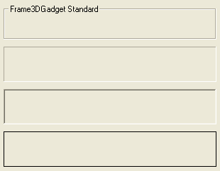

FrameGadget()
语法
Result = FrameGadget(#Gadget, x, y, Width, Height, Text$ [, Flags])概要
Creates a Frame gadget in the current GadgetList. This kind of gadget is decorative only.
参数
#Gadget A number to identify the new gadget. #PB_Any can be used to auto-generate this number. x, y, Width, Height The position and dimensions of the new gadget. Text$ A text to display in the frame. This parameter is only valid if no borders are specified, else it will be ignored. Flags (optional) Flags to modify the gadget behavior. It can be a combination of the following values: #PB_Frame_Single : Single sunken frame (Windows only). #PB_Frame_Double : Double sunken frame (Windows only). #PB_Frame_Flat : Flat frame (Windows only).
返回值
Returns nonzero on success and zero on failure. If #PB_Any was used as the #Gadget parameter then the return-value is the auto-generated gadget number on success.
备注
As this Gadget is decorative only, GadgetToolTip() cannot be used. This Gadget also receives no events.
示例
If OpenWindow(0, 0, 0, 320, 250, "FrameGadget", #PB_Window_SystemMenu | #PB_Window_ScreenCentered) FrameGadget(0, 10, 10, 300, 50, "FrameGadget Standard") FrameGadget(1, 10, 70, 300, 50, "", #PB_Frame_Single) FrameGadget(2, 10, 130, 300, 50, "", #PB_Frame_Double) FrameGadget(3, 10, 190, 300, 50, "", #PB_Frame_Flat) Repeat Until WaitWindowEvent() = #PB_Event_CloseWindow EndIf

参阅
GetGadgetText(), SetGadgetText(), ContainerGadget()
已支持操作系统
所有